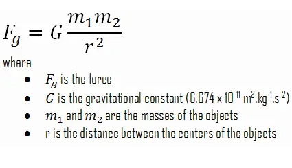
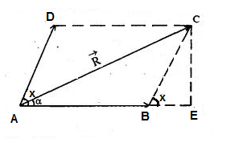

Definations
-
Static: It deals eith the force and their effects while acting upon the bodies at rest.
-
Dynamics: It deals with the forces and their effects while acting upon the bodies in motion.
- Kinetics: It deals with the bodies in motion due to application of force.
- Kinematics: It deals with the bodies in the motion without any reference to the force which are responsible for the motion.
Engineering Mechanics
- It is the science which deals with the physical state of rest or motion of the bodies under the action of force.
- Depending upon the nature of the body involved, it can be further divided into mechanics of rigid bodies, mechanics of fluids.
- Rigid Bodies : Rigid bodies are those which do not deform under the action of applied force.
-
The mechanics of rigid bodies is studies in two parts: Statics and Dynamics.
-
Statics deals with bodies at rest and Dynamics deals with bodies in motion.
-
Particles: It is defines as an object use mass is concentrated at a point . This assumption made with the size of a body is negligible and irrelevent to the study of motion of the body.
Basic Concept
The Study of mechanics involves the concept of Space, Time, Mass, Force.
- Concept of Space: It is essential to fixed the position of a point. To fully define the position of a point in space, we shall need to define some form of reference and coordinate system.
- Concept of Time: It is essential to relate the sequence of the event.
For Example: Starting and Stoping of the motion of a body.
- Concept of Mass: It is essential as an agency which change or tends to change the state of rest or the state of uniform motion of a body.
Fundamental Principles
- Newtons law of motion.
- Newton law of gravitation.
- The parallelogram law for the addition of forces.
- The principle of transmissibility of forces.
-
Newton's 1st Law of Motion: Every body continues in a state of rest or of
uniform motion in a straight line unless it is employed to change that state by a
force imposed on the body.
- Newton's 2nd Law of Motion:
The acceleration of a given particles is
proportion to the impressed force and taken place in the direction of the
straight line in which the force is impressed.
OR
The rate of change of momentum of a body is equal to the resultant force
acting on it.

- Newton's 3rd Law of Motion: To every action thereis equal and opposite reaction which means that the forces of action and reaction between two bodies are equal in magnitude but opposite in direction.
Force: - A force is defined as the action of one body on another force is the agent which changes or tends to changes the state of rest or uniform motion of a body. A force is a vector because its effects depends on the direction as well as on the magnitude of the action on the body.
-
The S.I. unit of force is “Newton” which is denoted by (N). 1N force be define as the force which produces an acceleration of 1m/ sec 2 a body of mass 1KG.
Examples of Forces:
- Force of gravity on a body. (Also known as weight)
- Push or Pull exerted upon a body.
- Force of attraction or repulsion.
- Force of friction.
Types of Forces:
- Tensile force
- Compressive force
- Shear force
Characteristics of Force:
A force is completely defined only when the following characteristics are specified:
- Magnitude.
- Point of application.
- Line of action.
- Direction.
Newtons Law of Gravitation:
Two particle are attracted towards each other along the line connecting them with a Force
whose magnitude is proportional to the product of their masses and inversly proportional
to the square of the distance between them.

Parallelogram law(Composition of two forces):
If two forces acting at a point are represented in magnitude and direction by the
adjacent sides of a parallelogram. Then the diagonal of the parallelogram passing
through their point of intersection represent the resultant both in magnitude
and direction.

Consider two forces
F1 and
F2 acting on a particle. Let,
x be the angle between two
forces.Now, we will draw a parallelogram ABCD in which AB represent
F1 and AD represent
F2 .
According to the parallelogram law of force AC will represent the resultant.
For Resultant force we use pythagores theorem,

AC2=AE2+CE2
R2=AE2+CE2
R2=(AB+BE)2+CE2
R2=(F1+F2cosx)2+(F2sinx)2
Angle formula:
tanx=CE/AE
tanx=CE/(AB+BE)
tanx=F2sinx/F1+F2cosx
| x=tan-1(F2sinx/F1+F2cosx) |
- case 1:
If the angle between the two forces is 90.
then, R2=F12+F22
- case 2:
If the angle between the two forces is 0.
then,R=F1+F2
- case 3:
If the angle between the two forces is 180.
then,R=F1-F2
Q> The resultant of two forces one of which is double the other is 260 N.
If the direction of the longer forces is reversed and other remain unultered
(unchanged) the resultant reduced to 180 N. Determine the magnitude of the forces
at the angle between the forces.
-> Given values,
F
1 = x
F
2 = 2x
R= 260 N
=> R
2= F
12 +F
22+ 2F
1F
2cosy
=> (260)
2=x
2+(2x)
2+4x
2cosy
=> 67600=5x
2+4x
2cosy ----------(eq
n 1)
case 2,
F
1=x
F
2=-2x
R=180 N
=> R
2= F
12 +F
22+ 2F
1F
2cosy
=> (180)
2=x
2+(2x)
2-4x
2cosy
=> 32400=5x
2-4x
2cosy ----------(eq
n 2)
On adding (eq
n 1) & (eq
n 2),we get
x=100
Therefore,
F
1 = x= 100 N
F
1 = 2x = 200 N
putting value of F
1 & F
2 in (eq
n 2),
=> 32400=5x
2-4x
2cosy
=> 32400=5 x 10000 - 4 x 10000cosx
=> -17600=-40000cosx
=> cosy=17600/40000
=> cosy=0.44
=> y=63.89